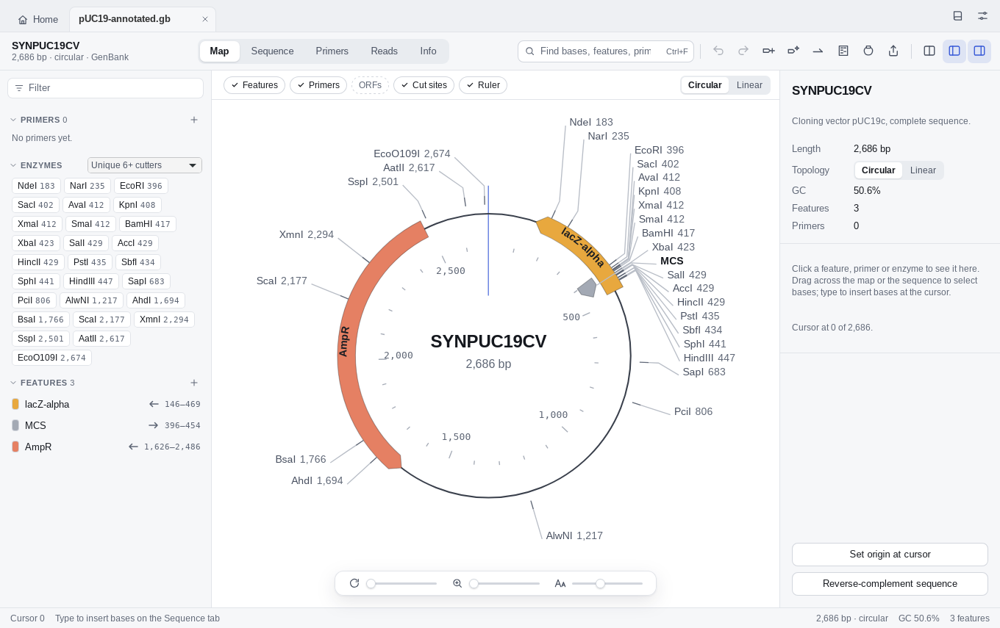

In active development
Plan, build and check your plasmids.
A free, open-source plasmid editor for Mac, Windows and Linux: maps and sequence editing, primers and cloning, and sequence verification with Sanger and whole-plasmid reads.
The first release is on its way. Until then you can follow along, or build it yourself, on GitHub.

Maps and editing
Open SnapGene, GenBank, FASTA and more. Circular and linear maps, an editable sequence with both strands, and common parts found for you in files with few features.
Primers and cloning
Tm that matches primer3, where each primer binds, primer design and mutagenesis, PCR products, digests on a simulated gel, and restriction, Gibson, In‑Fusion and Golden Gate cloning.
Sequence verification
Align Sanger traces and whole-plasmid reads to your construct, group them into clones and see each clone's changes as mutations, such as W163R.